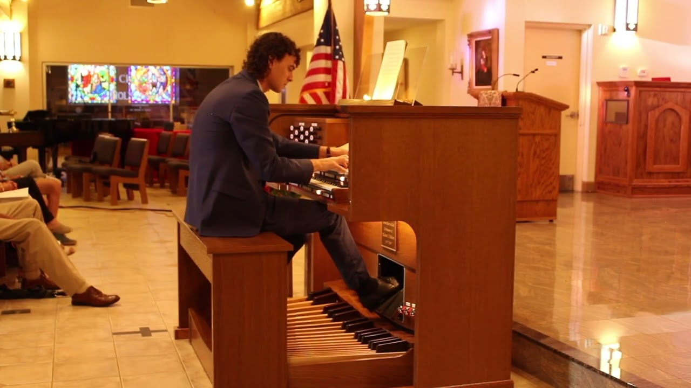
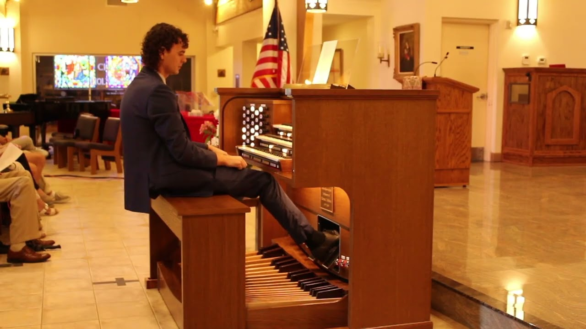

Music
Organist, choirmaster, and improviser

About
I am Organist & Choirmaster at Calvary Episcopal Church in Indian Rocks Beach, Florida, a post I held from October 2022 to June 2025 and returned to in April 2026. I direct the adult choir and bell choir, plan the music for the liturgical year, and play for weekly services, feast days, and special events.
At Calvary I revived the concert series, reinstated full Anglican chant, and organized an Evensong that raised $1,300 toward the rebuilding of Calvary. I documented the music program’s losses from Hurricane Helene and raised $7,100 in rebuilding grants, and I continue to oversee the program’s rebuilding.
Before Calvary I was organist at Grace Presbyterian Church in Gainesville and a ballet pianist for the University of Florida Dance Department, improvising for ballet and modern dance classes. I studied organ with Dr. Laura Ellis and hold a minor in organ performance from the University of Florida. I also sing bass and play viola.
Recordings
Improvisations from the dedication of the new organ at Calvary Episcopal Church.

14:35Improvised Sinfonietta
Improvised for the organ dedication at Calvary Episcopal Church, Indian Rocks Beach, Florida.

10:27Improvisations for the Singing of the Organ
From the dedication concert of Calvary’s new Rodgers instrument, following the church’s recovery from flooding caused by Hurricane Helene. The Singing of the Organ is a liturgical rite in which the organ is ceremonially “awakened” through spoken invocations answered by improvised music.
2025 Raymond Glover Grant for Episcopal Liturgical Music
Association of Anglican Musicians · $3,500
A professional development award supporting study of choral Evensong, Anglican chant, and liturgical improvisation at the Cathedral Church of St. Peter in St. Petersburg, Florida, and the American Cathedral in Paris.
Professional Experience
-
October 2022 – June 2025 · April 2026 – Present
Organist & Choirmaster
Calvary Episcopal Church, Indian Rocks Beach, FL
- Direct the parish music program, including adult choir and bell choir
- Plan choral anthems, service music, hymns, and music for major liturgical services
- Serve as principal organist for weekly services, feast days, and special events
- Revived the concert series, reinstated full Anglican chant, and organized an Evensong raising $1,300 for the rebuilding of Calvary
- Documented the music losses from Hurricane Helene and coordinated music-related aspects of the rebuilding; raised $7,100 in rebuilding grants
- Oversee the continued rebuilding and development of the parish music program
-
Spring 2021 – Spring 2024
Ballet Pianist
University of Florida Dance Department
- Improvised music for ballet and modern dance classes
- Rearranged and adapted classical and contemporary pieces to fit class formats
- Collaborated with dance faculty to refine musical selections for performance needs
-
October 2019 – October 2022
Organist
Grace Presbyterian Church, Gainesville, FL
- Prepared preludes, postludes, and choral anthems, and led four hymns weekly with choir
- Coordinated special music for holiday services; recommended and hired guest singers
Talks & Festivals
Haarlem International Organ Festival
Participant, Advanced Improvisation Course with Franz Danksagmüller.
Il faut chercher – A Personal Journey in Improvisation
Invited talk, University of Florida Pipe Organ Centennial.
Emerald Coast Chamber Music Festival
Fauré Piano Quartet No. 1, Rochberg Viola Sonata, and Rachmaninoff Spring Waters and Harvest of Sorrows.
Ensemble Experience
-
Master Chorale of Tampa BayBassFall 2024 – Spring 2025 · Fall 2026 – Present
-
American Cathedral ChoirBassFall 2025
-
Paris Choral SocietyBassFall 2025
-
St. Peter’s Cathedral Evensong Choir, St. Petersburg, FLBassFall 2024 – Spring 2025
-
Gainesville MasterchoraleBassSpring 2020
-
UF Symphony OrchestraViolaFall 2017 – Spring 2019
-
UF Chamber MusicViolaFall 2017 – Spring 2019
-
Ocala Symphony OrchestraViolaSpring 2017
-
Danville Symphony OrchestraViolaFall 2015
Teachers & Affiliations
- Organ
- Dr. Laura Ellis
- Improvisation
- Sophie-Véronique Cauchefer-Choplin, Jeffrey Brillhart, Frédéric Blanc, Samuel Liégeon, David Cassan, Nicola Canzano
- Voice
- Prof. Lynn Sandefur-Gardner, Christopher Holloway
- Piano
- Dr. Mitch McKay, Dr. Jasmine Arakawa, Dr. Shirley Blankenship
- Affiliations
- American Guild of Organists (AGO), Association of Anglican Musicians (AAM)
Music CV
Positions, teachers, and ensemble experience as a PDF.